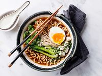
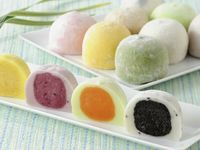
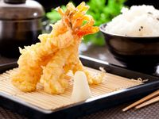

Еда Японии
Японская кухня известна своим разнообразием и уникальными блюдами.
5 популярных японских блюд:
- Суши
- Рамен
- Моти
- Удон
- Темпура
| Блюда | Изображение | Описание |
| Суши |

|
Суши — это традиционное японское блюдо, состоящее из риса, приправленного уксусом, и различных начинок, таких как рыба, морепродукты, овощи и иногда фрукты. Существует множество видов суши, включая нигири (рис с кусочком рыбы сверху), маки (роллы, завернутые в нори) и сашими (тонко нарезанная сырая рыба без риса). |
| Рамен |  | Рамен — это японский суп с лапшой, который обычно подается с бульоном на основе свинины, курицы или рыбы. Лапша может быть разной толщины и текстуры. Рамен часто дополняется различными ингредиентами, такими как нарезанная свинина (чашу), зеленый лук, яйца, водоросли нори и бамбук. |
| Мочи |  | Моти — это японский рисовый десерт, сделанный из клейкого риса, который варится и затем толкут до получения гладкой и эластичной массы. Моти может быть как сладким, так и соленым. Часто его начиняют сладкой пастой из красной фасоли (анко) или используют в качестве обертки для мороженого. |
| Удон |

|
Удон — это толстая японская лапша, сделанная из пшеничной муки. Она обычно подается в горячем бульоне с различными добавками, такими как темпура, зеленый лук, грибы и овощи. Удон также может подаваться холодным с соевым соусом или другими соусами для макания. |
| Темпура |  | Темпура — это метод приготовления, при котором морепродукты и овощи обмакиваются в легкое тесто и обжариваются во фритюре до золотистой корочки. Темпура обычно подается с соусом для макания, состоящим из соевого соуса, дацукэ (сладкого соуса) и тертого редьки. |
| Эти блюда можно встретить на японских праздниках и фестивалях. Узнать о них подробнее можно на следущей странице. | ||